Published July 1, 2025
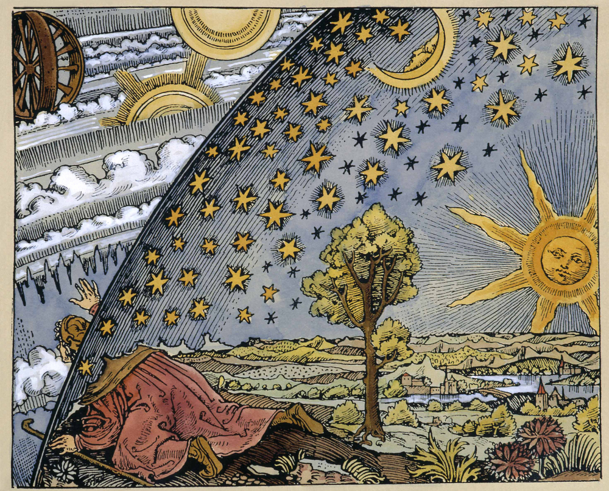Despite the ancient sounding ring to this question, the first sign of an attempted answer in Western philosophy came only with the Moderns — not the Stoics with their eternal return, nor the Christians with their metaphysical hesitations. Remarkably, it wasn’t until the 17th and 18th Centuries that two very different philosophers emerged with two very different answers to the question.
The first came from a bishop named James Ussher. Here is a drawing of him.
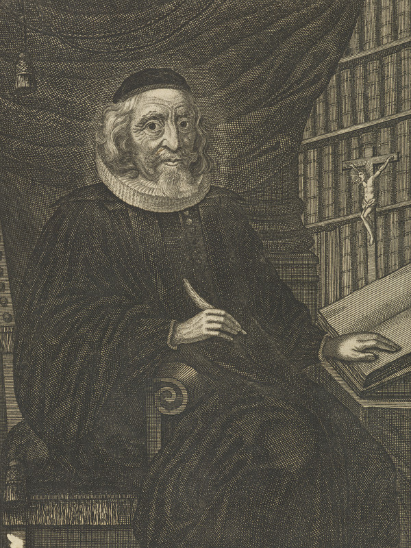In 1650, Ussher published Annales Veteris Testamenti in which he laid out a chronology of the world using the Bible as a historical record. In this, he declared that the creation of the world — including the heavens and sky — occurred on
Sunday, 23 October, 4004 BC, at around 6:00 PM.
A strangely precise estimate for a first try. And it implied the sky was roughly 6,000 years old in his time. This is remarkably young and abides by the Biblical notion that the sky was invented for humanity’s sake.
Yet, only 65 years later, a natural philosopher watching molten iron cool in a furnace proposed a radically different answer. Edmond Halley, who famously also predicted the date a comet would return decades before it did, used the salinity of the oceans and the rate of cooling of celestial bodies to estimate the sky's age. Here is a drawing of him.
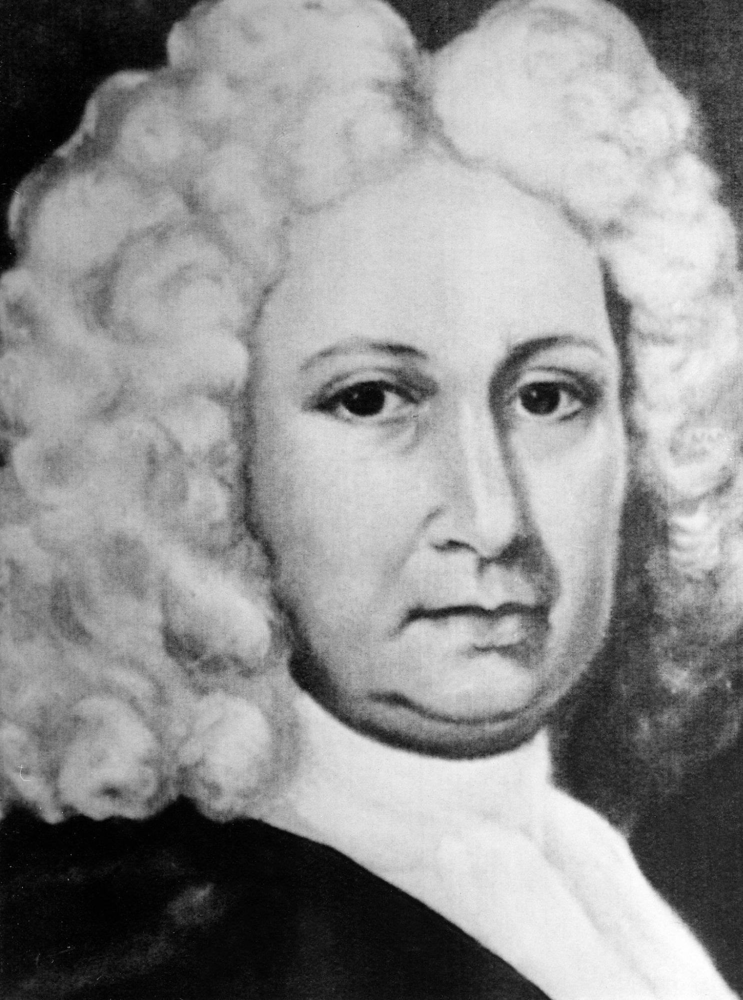In a 1714–1716 issue of the Philosophical Transactions, Edmond Halley presented what we now call the ‘salt clock’ method—using the rate of salt accumulation in the oceans to estimate the age of the Earth—and by implication, the atmosphere and sky. He declared that,
“The sky is 75,000 years old. At least.”
Though Halley fell short of a definitive number like Ussher’s, he was among the first to suggest that a measurable, natural process could give us an empirical age of the cosmos. This kicked off the inquiry which led us to our most up-to-date estimate of ~13.8 billion years through a combination of Cosmic microwave background radiation measurements (from missions like Planck and WMAP), Hubble’s law (expansion rate of the universe), and standard cosmological models (like ΛCDM).
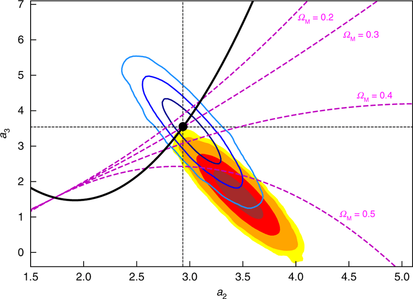Together, Ussher and Halley represent a major philosophical clash at the dawn of modern science. Ussher’s precise, scripture-based chronology reflected a worldview where the sky was young and created for humanity, while Halley’s naturalistic measurements hinted at a vast, ancient universe waiting to be understood through observation and reason.
Looking beyond Western thought, however, we find many interesting and creative attempts by philosophers at dating the age of the sky. In Hindu Cosmology, for example, the sky is 155.52 trillion years old!
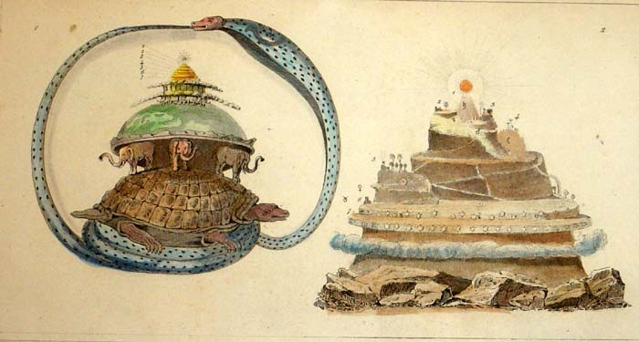In the Puranas and Mahabharata, time is structured into immense cosmic cycles. A kalpa (a "day of Brahma") is 4.32 billion years. A full cycle (including nights, years, lifetimes of Brahma) adds up to trillions of years. The current sky is said to be in the 51st year of Brahma, which places the age of this cycle of the universe at around 155.52 trillion years. So interestingly, the sky has an age but no origin.
Madame Blavatsky, the 19th-century Russian-born mystic and founder of Theosophy, drew heavily on ancient Hindu cosmology and esoteric traditions to propose her own occultist answer, centered on the concept of “Manvantaras” — vast cosmic cycles. These cycles are measured in millions to billions of years, though Blavatsky’s calculations are symbolic and allegorical rather than scientific.
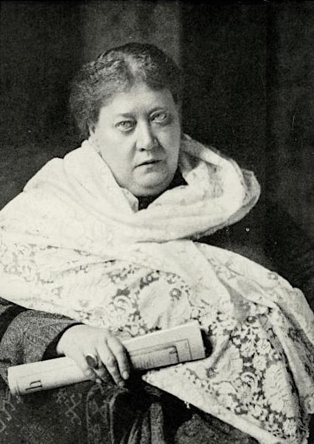In her major work, The Secret Doctrine (1888), Blavatsky described Earth’s spiritual and physical evolution as unfolding through seven Root Races, or stages in humanity’s development, each corresponding metaphorically to vast astrological ages governed by star-beings. The Hindu-inspired cycles she describes imply a sky that is billions of years old, with a Mahayuga (Great Age) lasting 4.32 million years and a Day of Brahma lasting 4.32 billion years (1,000 Mahayugas).
Some Chinese Daoist alchemical texts, especially those concerned with immortality and the “Great Year” (da nian), describe time as cyclical in units of 129,600 years — tied to astronomical and numerological systems. The Taiyi Shengshui (The One Gave Birth to Water) and works like Huainanzi talk of sky and earth co-arising from primal qi, but some traditions suggest skies are reborn every great cycle. So the sky has a reset button, and its age is the circumference of a cosmic breath: 129,600 years.
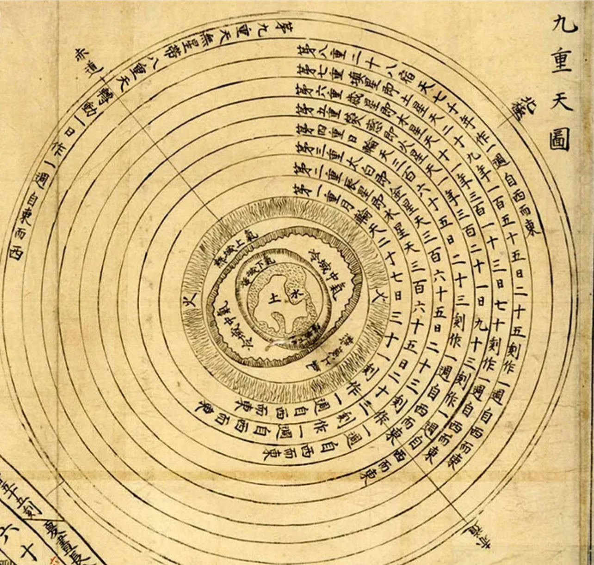In Zoroastrian cosmology, we find a universe laid out across a 12,000-year timeline, divided into 4 epochs of 3,000 years. The sky (or firmament) was created in the second epoch, after the spiritual world but before humanity. So the sky is roughly 9,000 years old in this system – it was built in Year 3,000 and will collapse by Year 12,000.
So why was there no attempt at an answer in Western thought prior to the Modern Period? For the Ancients, the reason is likely that they didn’t separate sky from cosmos. Asking “how old is the sky?” was like asking “How old is the stage before the play?” Time was often considered something the sky measures, not something the sky experiences. Since the sky was the realm of gods, stars, or divine harmony, giving it a number would be like putting a birthday on Zeus.
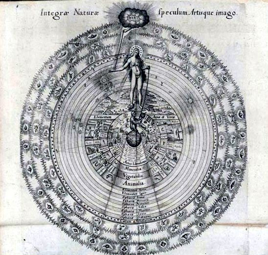For Plato, the sky is not in time — time is in the sky. The sky is not a thing with an age; it is the first clock. Its age is synonymous with the very concept of age. For the Stoics, the sky has died a thousand times and will live again (ekpyrosis). It has no age because it is incapable of ceasing to be. Its age is a loop, not a line.
In many mythologies, the sky is not a natural object, but a deliberate covering — a veil stretched taut by the gods to conceal the raw machinery of existence. In Babylonian myth, Marduk slays the chaos-dragon Tiamat and stretches her body across the heavens to form the sky — a grim, cosmic tarp made of vanquished disorder. In Genesis, the firmament is created to divide the waters above from the waters below — a protective dome that makes human life possible. The sky, in these stories, is a curtain drawn for our benefit.
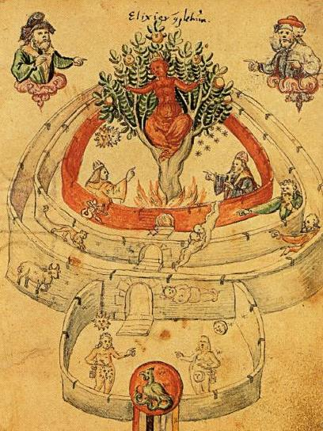Gnostic texts, like On the Origin of the World and Apocryphon of John, consider the sky a deception – a rotating dome ruled by false gods (archons) who trap souls below it. While no precise number is given, time is described in hundreds of thousands of years — as the age of the trap or the length of cosmic imprisonment. The sky’s age is the length of our captivity — its number is how long we’ve been asleep.
Johannes Trithemius (1462–1516), a cryptographer-monk-mystic, wrote about celestial intelligences controlling the world in 800-year periods, rotating like gears — a secret calendar in the sky. Again no age, but a coded rhythm to the sky nonetheless.
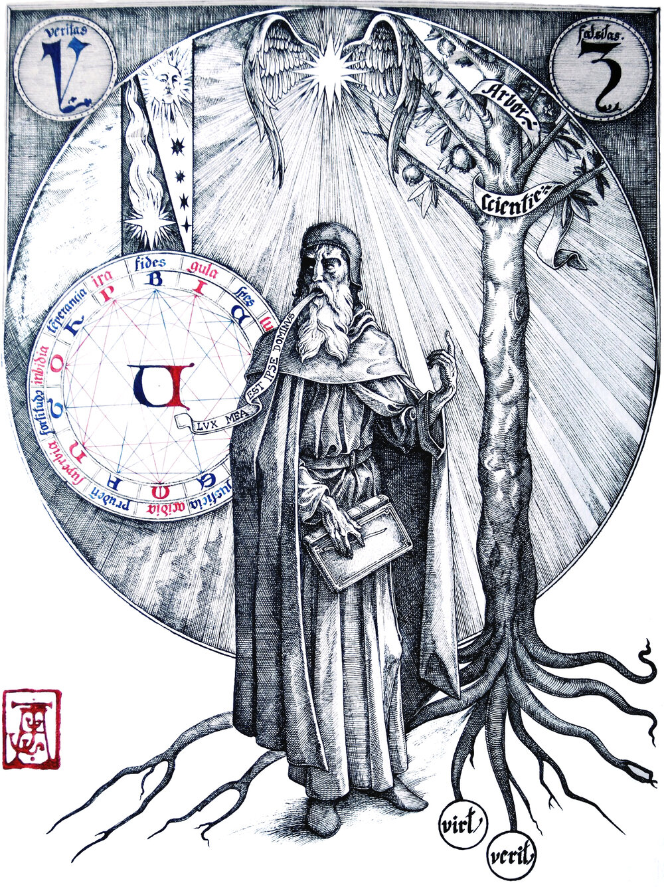Some of the most interesting philosophies of the sky have been offered by the pre-Socratic philosophers. Their fragmentary insights, often handed down in cryptic scraps, reveal something more compelling than a date: a series of radically different visions of what the sky is, and how it comes to be. None directly asked “How old is the sky?” And yet, they all answered it in their own way — not with numbers, but with metaphors of fire, breath, rhythm, and ruin.
For Parmenides, the sky simply has no age. In Parmenidean ontology, all that exists is Being, and Being does not change. Time, movement, growth, decay — these are illusions conjured by unreliable senses. If we trust only reason, we must conclude that what is always was, and always will be. There is no birth or death. No past or future. Only the eternal, seamless Now. If the sky is, then it has no age, because age presumes change — a before and after. But there is no before and after in truth.
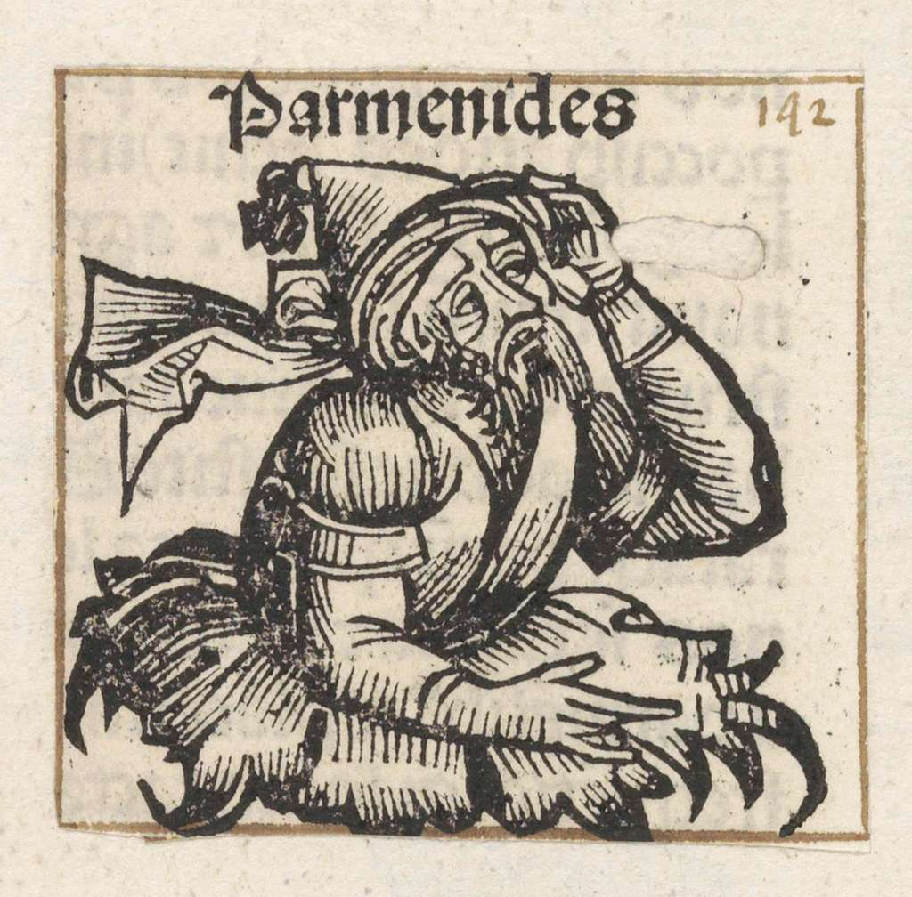The sky, to our eyes, may rise, set, storm, clear — but this is theater, not ontology. The real sky — if such a thing exists — cannot age, because it does not become. It simply is. And if the sky as we perceive it is part of the grand illusion of Becoming, then the question of its age is a nonsense question — like asking for the temperature of a mirage.
For Parmenides, to ask “How old is the sky?” is like asking “How long has the dream been dreaming itself?” It hasn't — because nothing moves, nothing changes. There is no sky. There is only Being. And Being is beyond age.
Heraclitus of Ephesus (c. 500 BCE), known as the “weeping philosopher,” gave us a cosmos made of ever-living fire. For him, the world — including the heavens — was not created, nor static, but constantly in flux:
“The cosmos, the same for all, was not made by gods or men, but always was and is and will be: an ever-living fire.”
For Heraclitus, to ask for the age of the sky is like asking the age of a flame. The fire exists because it burns. It is always old and always new. If there is time, it’s cyclical — the sky is not a container but a process: always kindling, always extinguishing, always returning.
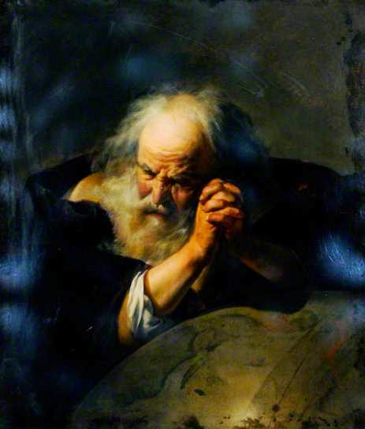Anaximenes of Miletus (c. 6th century BCE) conceived of the sky as breath. He proposed air (aēr) as the source of everything. The stars and sky condensed from rarefied air; the world breathes in and out.
“Just as our soul, being air, holds us together, so breath and air encompass the whole world.”
For Anaximenes, the sky has a kind of organic origin — it is made of the same stuff as soul. Its “age” is not historical but elemental. If breath is continuous, then the sky is not old in years, but eternally emerging, an exhalation of the cosmos.

For Anaximander, the shadowy figure who may have drawn the first map of the earth, the sky is a wound in the boundless. He imagined the universe emerging from the apeiron — the indefinite, the boundless. Worlds rise and fall from it in cycles, like bubbles in water. He conceived of celestial bodies as wheels of fire, partially obscured by mist, with visible light shining through holes — the stars and sun are leaks in the firmament.
“Things perish into those things out of which they came to be, according to necessity.”
Anaximander gives us a sky with a beginning and an end, but not one beginning — many. Skies emerge and dissolve in cycles. Like peeling skins off an onion, each cosmos reveals another behind it.
Empedocles envisioned the cosmos not as a single, stable structure, but as a battlefield between Love and Strife. When Love prevails, elements merge into harmony; when Strife dominates, they separate.
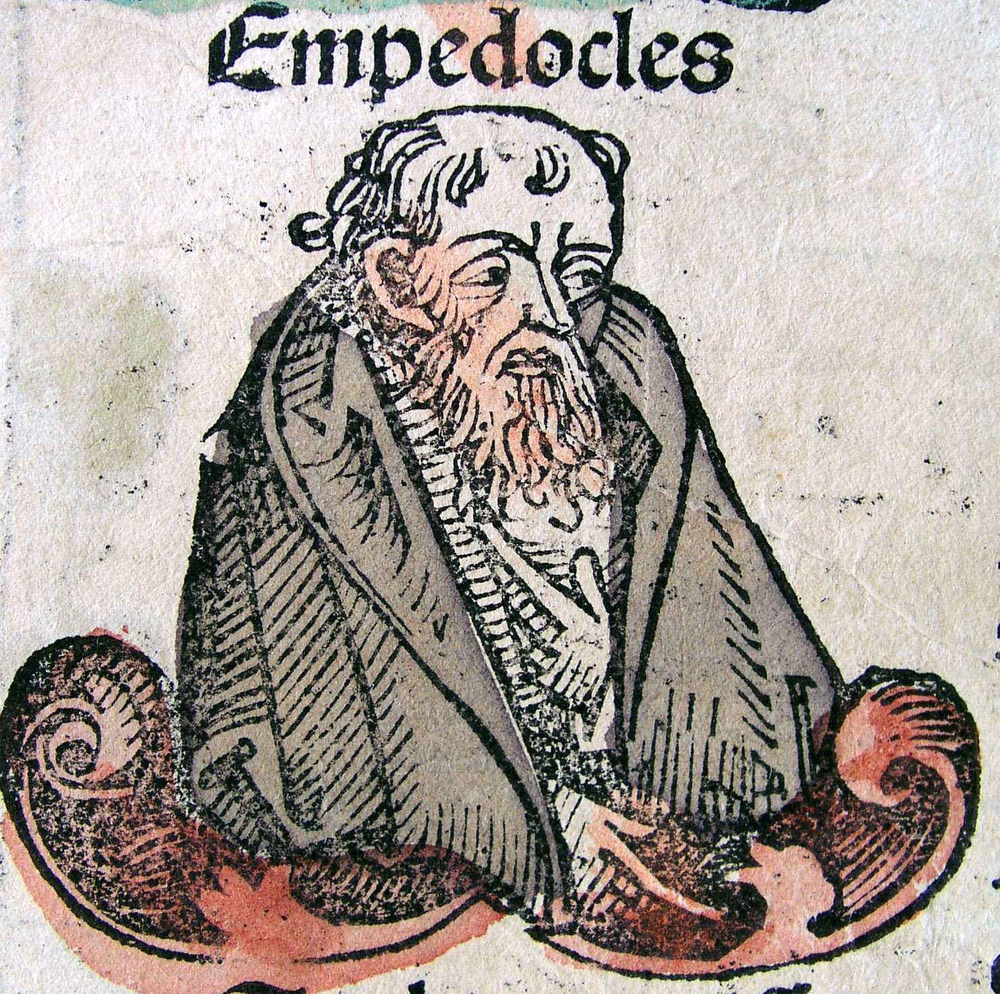The sky, in his system, is temporary — a passing configuration of the four roots (earth, air, fire, water), drawn together or torn apart.
“There is no birth of any mortal thing, nor any end in destructive death.”
Empedocles would say the sky has no fixed age because nothing truly “begins” or “ends.” Everything is rearranged. The heavens we see now are one verse in an eternal poem of recombination.

Pythagorean cosmology understood the heavens as music — spheres turning in mathematically perfect harmony. Planets were believed to emit tones as they moved, inaudible to human ears: the “music of the spheres.” Here, the sky is not aged like an object but measured like a chord. It is timeless in the way a song is: you may experience part of it, but it exists all at once, in ideal form.